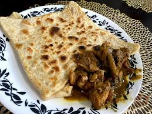

Mutton Veechu Parotta:

Serves: 2
For Mutton Filling:
- 200g minced mutton
- 1 onion, chopped
- 1 tsp ginger-garlic paste
- 1/2 tsp garam masala
- 1/2 tsp chili powder
- Salt, oil
For Parotta:
- Ready-made or homemade veechu parotta dough
Steps:
- Sauté onion and ginger-garlic paste. Add mutton, spices, and salt. Cook till dry. Cool.
- Roll dough thin, place filling, fold like an envelope.
- Shallow fry on tawa with oil till golden and crisp.
- Serve hot with raita or salna.